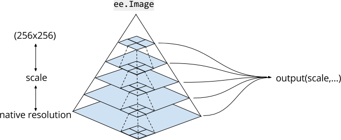
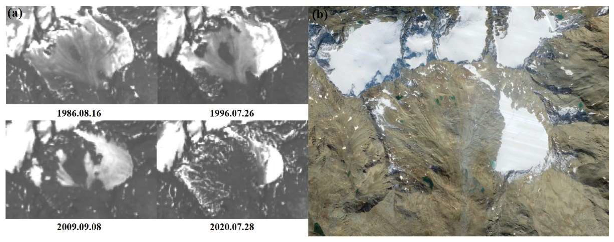

5. Google Earth Engine(GEE)
This is a learning diary for week 5.
Let’s find out what GEE is and how to use it with various functions!
5.1 Summary
5.1.1 What is GEE?
- A platform tool for analysing geospatial information/datasets provided by Google (e.g. analysis of forest coverage, land use change, or assess the health of agricultural fields) (“FAQ Google Earth Engine,” n.d.)
- GEE uses Javascript
- GEE has two sides: Client side & Server side
- It has no data in the script (like the data environments in R)
- Any pre-loaded data product will be on the server side
- So we need to use the Map() function instead of for loop!
- Loading the complete image collection is inefficient when we don’t know what is inside the image collection = The reason why we need to use the ‘Map()’ function
- GEE converts all data into the Mercator projection (EPSG:3857) when displayed (also can set the projection manually)
5.1.2 Image components in GEE
| Raster | an image |
| Image Collection | several images or polygons = a stack of raster data |
So we use the specific function to load and manipulate it. We can also filter using dates/region/geometry.
5.1.3 How to use GEE?
5.1.3.1 Set a band
If you want to set Red / Green / Blue visualisation, e.g. bands: [‘B4’, ‘B3’, ‘B2’]
5.1.3.2 Set your scale
- Image scale in GEE = Pixel resolution set by the output
- We can analyse our map/image depending on the zoom level(scale)
5.1.4 GEE functions
5.1.4.1 Reducing images
Make one statistically calculated image using multiple satellite images from the Image Collection
collection.reduce(ee.Reducer.median/mean/min/variance()): Choose a Reducer parameter you want to usereduceRegion(): Reducing images by region (use a polygon)reduceRegions(): Reducing images by regions (use a polygons)reduceNeighborhood(): Reducing images by neighbourhoodscollection.select(['system:time_start','pr_mean']).reduce(ee.Reducer.linearFit()): Regression (when we want to see the change over time in pixel values)
5.1.4.2 Joins and filtering
- Join image collections (e.g. Satellite data from January with data from October)
- Join feature collections (e.g. different polygons)
- Use the code
ee.Filter()
5.1.4.3 Mosaicking
- Combining multiple images
5.2 Application
It is being used for various studies of the global climate, topography, and satellite image data accumulated by Google through GEE, such as surveys on water depletion or the devastation of the Amazon rainforest.
In the case of the polar glacier monitoring, we can see that it is the decrease in glacial volume over time, as (Li, Wang, and Wu 2022) mentioned.

5.3 Reflection
There are many things to learn in this endless world 🤯
I’ve heard much about GEE before, so it was good to know what GEE is and how to use it through this week’s lecture. Most of the environmental and glacier photos I usually see in news articles are GEE data, meaning GEE is used often in everyday life.
I was worried that it would be challenging to use GEE’s code because it was in Javascript. But I could understand and use it easily as it was similar to Python or R.
When I get used to using GEE, I want to analyze the time series of forest destruction change in Jeju Island through GEE data, which I discussed in the 4th week.